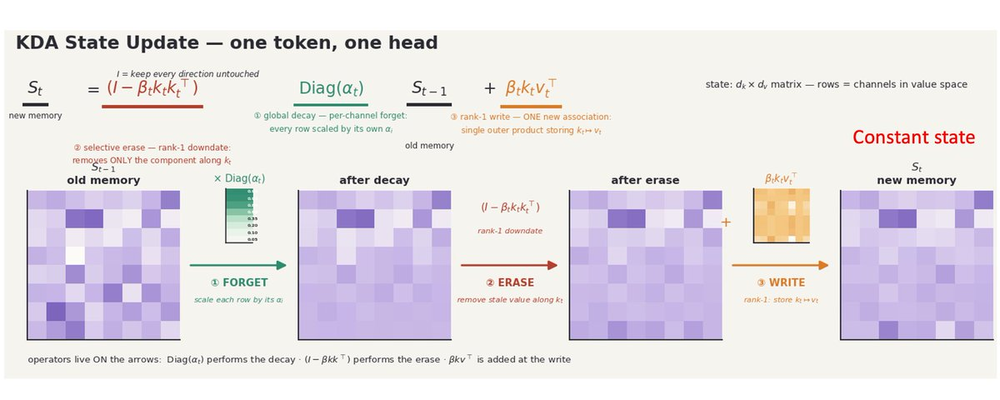
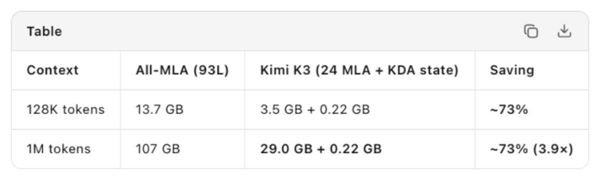
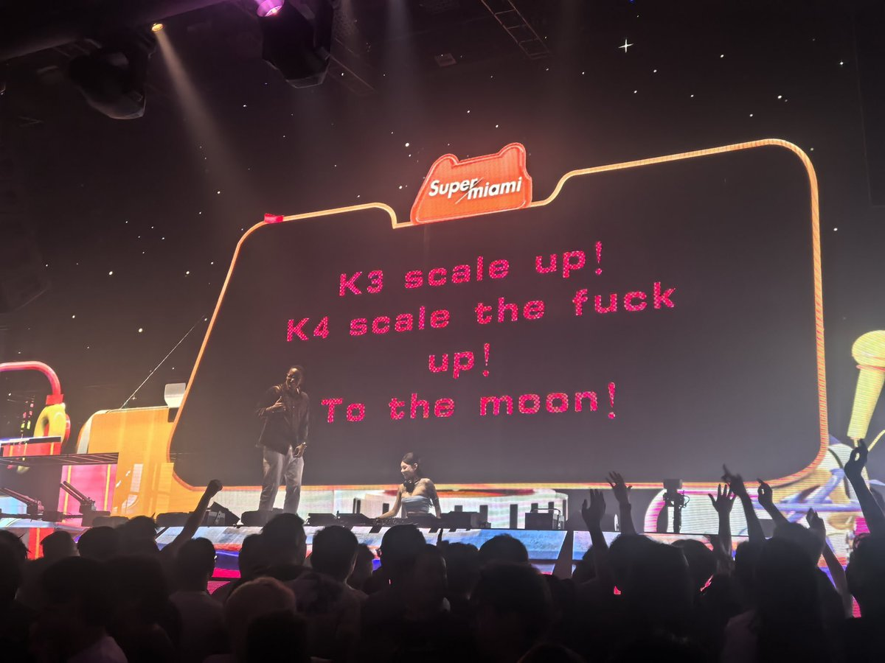
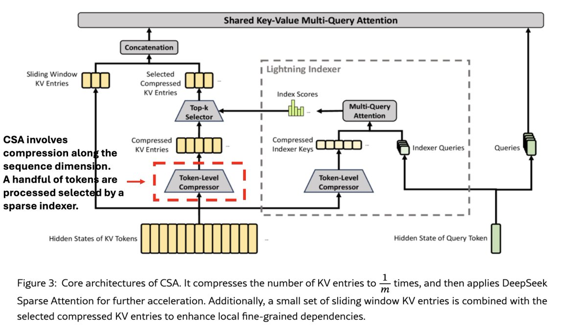
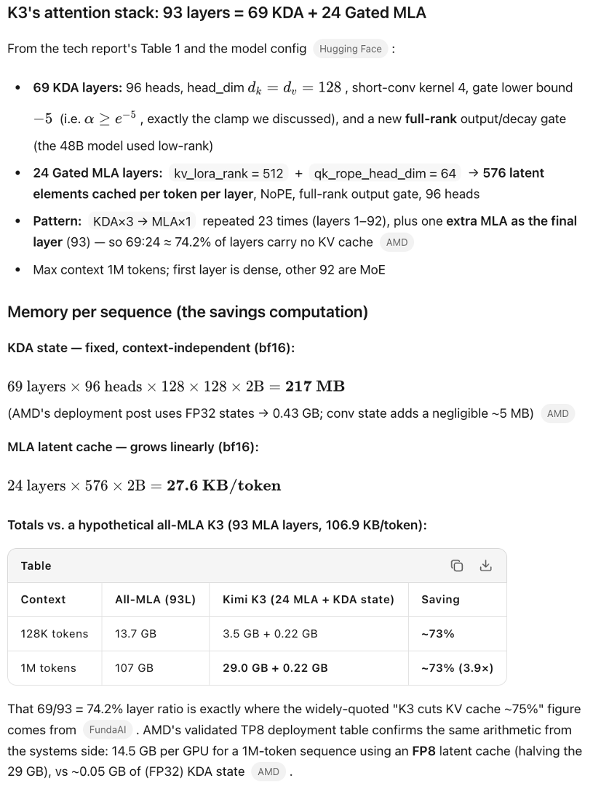
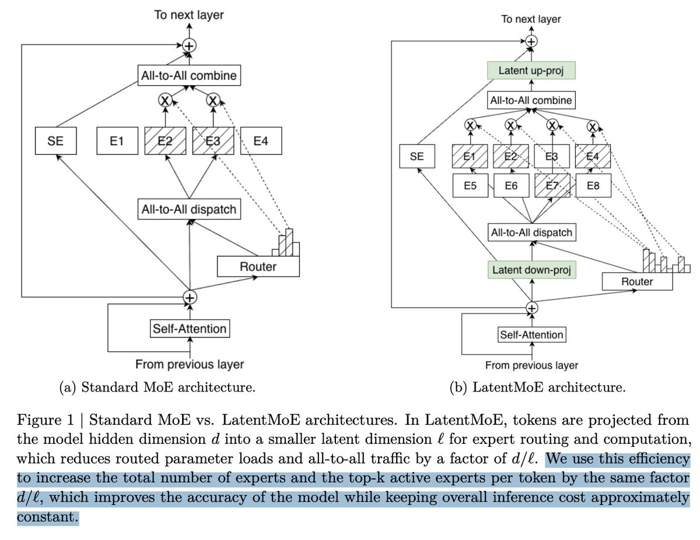

Kimi K3最具争议的细节之一是其常量状态：KV缓存不会随上下文或对话长度线性增长。在长上下文用例（如agentic coding）大幅推高内存需求的背景下，这一特性引发了激烈讨论。这篇X长文从技术原理到市场影响做了深入分析。
线性模型一直像共产主义一样在纸上看起来很美好。随着上下文增长，KV缓存不再持续膨胀，而是保持一个被持续更新的常量状态：无论有一千token还是一百万token，状态大小不变。好得令人难以置信，因为确实如此！线性模型在回忆早期对话中的特定信息（如电话号码）方面有问题。

原因在于模型不断更新其内部「摘要」（称为状态）。由于这个状态大小固定（例如Kimi K3每头128×128），其存储容量有限。它压缩信息以追求效率，但必然丢失一些信息：压缩是有损的。
解决方法是用混合线性架构，组合线性层（通常75%）和全注意力层（25%）。混合线性也可以有高效的完整注意力版本（如Kimi K3的DeepSeek风格MLA）。但早期的混合线性模型从未达到前沿水平。Kimi K3证明了其变体KDA可以实现接近完美的召回，与所有层使用全注意力的模型一样好。这是一个巨大的突破。
Moonshot不是第一个使用混合线性的团队，但他们提出了一个高度有效的变体，允许对记忆衰减进行细粒度控制。模型的状态本质上可以看作一个记忆栈（过度简化版）。在每个新token位置计算一个对角矩阵并与状态相乘：这导致有些记忆被遗忘得更多，有些更少（专业术语：per-channel decay）。早期版本中所有记忆被遗忘的程度相同，而选择性遗忘显著提升了性能！

当然他们还做了许多其他工作，涉及数据工程、内核开发、attention residuals、stable latent MoE等。但正是在注意力部分这个看似简单的技巧带来了非凡的性能提升。
K3有93层和96个头。KDA的dv和dk维度为128。来看两个对比场景处理128K token和1M token：全MLA架构vs实际Kimi K3（69层KDA + 24层MLA）。

关键数据： 全MLA的KV缓存从128K时的13.7 GB增长到1M时的107 GB。而KDA状态保持恒定的0.22GB，只有MLA部分从3.5 GB增长到29 GB。两种情况下节省约73%。 MLA相对于MHA和GQA已经是约90% 的节省了，KDA在此基础上再省73%！

有人会说DeepSeek V4在相同规模下节省更多。但DeepSeek V4还未达到前沿水平。而且即使达到了，也只会朝同一个方向改进：更少的存储。
有人提出需要多次缓存KDA状态（因为它不像KV缓存那样可加性）。但69层的KDA状态总共仅0.22GB。即使在长会话中每20K token快照一次，1M上下文共50次快照也只需11GB，远低于全MLA的107GB。
关于子Agent的问题：典型模式中，子Agent完成任务返回控制权后其KV+状态即被删除。主会话/主Agent的状态需要保留更长时间：这正是KDA节省最大的地方。异步长运行Agent的模式相对罕见。


为何可能无影响： 即使节省真实存在，如果开源AI被广泛采用，大多数部署不会像前沿实验室那样高效。模型层面的增益会在行业层面损失：大量小型部署的低效运行。此外，前沿实验室很可能已在用类似方法，已被市场定价。
但有小概率产生影响： 历史上大型实验室也表现出过严重低效：XAI训练管线MFU低下、Meta训练了DeepSeek风格MoE的糟糕版本、Google耗时1.5年才让Gemini进入前沿。约束驱动创新。 一旦KDA这种已被验证的前沿技术被闭源实验室采用，至少意味着几个规模极大的实验室内存需求降低75%，影响可能是数百亿美元级别。
杰文斯悖论： 节省的内存可能被使用量增加完全吞噬：但这不保证消费增长总是超过节省。
完全去除位置编码： KDA层因循环性质不需要位置编码。他们甚至对MLA层也去掉了位置编码且不影响性能。好处是不需要特殊努力就能扩展模型上下文长度。
Attention Residuals： 确保高层能对低层的输入进行选择性关注。早期方法中高层无法区分给定token位置来自低层的不同输入。
Stable Latent MoE： 将token表示投影到更小的潜空间后再进行专家路由和计算，在相同或更低推理成本下实现更高精度和更多专家容量。
综合效果： Moonshot团队相对于之前的Kimi K2架构实现了2.5倍的训练效率提升：以2.5倍更少的FLOPs达到相同的验证损失！这对训练计算也是巨大的节省。MoonShot还开源了FlashKDA GPU内核和MoonMoE。
缩放定律是统计观察，不是不可改变的自然规律。新架构和新训练范式可能发现新的缩放定律，在更小规模（和更低KV/状态）下提供更好的性能。 中国实验室在高约束高能力的组合下正在发现那些资金更充裕的实验室未能发现的设计空间角落。
MoonShot的成功无疑会激励DeepSeek、ZAI、MiniMax、阿里巴巴、字节跳动SEED乃至百度、蚂蚁、小米、美团等众多团队追求不仅是最佳开源模型，而是最佳整体模型。中国拥有最多的年轻AI研究者（以NEURIPS统计为准），而年轻研究者对AI领域的贡献比例最高。
AI多头和内存多头没有将算法创新和新的缩放定律纳入考量。在他们看来一切都会被杰文斯悖论吞噬。但要导致内存股崩盘，不需要大规模的需求减少：Jaya Gupta指出，即使是微小的需求减少也可能引发存量持有者开始获利了结的博弈竞赛，可能崩盘整个市场：而这似乎已经开始。
不应让如此大的泡沫形成并对社会造成灾难性影响。我仍然对这项技术的潜力（甚至内存需求）和未来的基础设施建设持乐观态度。这是最激动人心的时代！
（注：这不是投资建议）
参考：https://x.com/bookwormengr/status/2082377457852920075